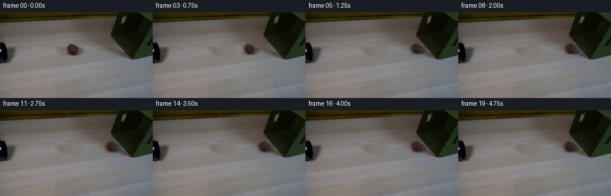

CODING AGENTS AS PIXEL WORLD MODELS
traex/GPT-6.1-Sol · 0151
点击播放 · 原生 RGB 像素
逐轮保存的候选
回放视频、检查图与代码变化。
每份候选均可单独播放。实际图片检查记录在下方工具轨迹中。
候选 01播放与检查图
点击播放 · 原生 RGB 像素

展开代码变化
--- 上一保存版本
+++ 本次保存版本
@@ -0,0 +1,147 @@
+from pathlib import Path
+import numpy as np
+from PIL import Image
+from scipy.ndimage import gaussian_filter, map_coordinates, distance_transform_edt
+from scipy.sparse import lil_matrix
+from scipy.sparse.linalg import spsolve
+import artifact_io
+
+ROOT=Path(__file__).resolve().parent
+
+def make_plate(im):
+ yy,xx=np.mgrid[:144,:256]
+ # The small foreground sphere and its soft, rightward cast shadow.
+ hole=((xx-123.0)/19.4)**2+((yy-63.1)/12.6)**2<1
+ points=np.argwhere(hole)
+ ids=np.full(hole.shape,-1,int);ids[hole]=np.arange(len(points))
+ A=lil_matrix((len(points),len(points)),dtype=float)
+ rhs=np.zeros((len(points),3))
+ for k,(y,x) in enumerate(points):
+ A[k,k]=4
+ for dy,dx in ((0,-1),(0,1),(-1,0),(1,0)):
+ j=ids[y+dy,x+dx]
+ if j>=0:A[k,j]=-1
+ else:rhs[k]+=im[y+dy,x+dx]
+ plate=im.copy()
+ plate[hole]=spsolve(A.tocsr(),rhs)
+ rng=np.random.default_rng(151)
+ noise=gaussian_filter(rng.normal(size=(144,256)),.45)
+ interior=np.minimum(distance_transform_edt(hole)/3,1)
+ plate+=noise[...,None]*interior[...,None]*1.05
+ return np.clip(plate,0,255)
+
+
+def main():
+ raw=np.array(Image.open(ROOT/'first_frame.png').convert('RGB'),dtype=np.uint8)
+ im=raw.astype(float)
+ plate=make_plate(im)
+ y,x=np.mgrid[:144,:256]
+ cx,cy=121.35,62.35
+ rx,ry=7.85,8.8
+ nx=(x-cx-.10*(y-cy))/rx;ny=(y-cy)/ry
+ rr=np.sqrt(nx*nx+ny*ny)
+ # Soft photographic silhouette rather than a sharply drawn circle.
+ alpha=np.clip((1.07-rr)/.17,0,1)
+ alpha=gaussian_filter(alpha,.35)
+ # Recover the actual cast shadow as a multiplicative layer from the photo.
+ # Its inner part is unobserved beneath the ball; use the same smooth penumbra.
+ ratio=np.clip(im/np.maximum(plate,1),.35,1.08)
+ exterior=(alpha<.035)
+ shadow=1-ratio
+ shadow=np.maximum(shadow,0)
+ region=(((x-125)/19.8)**2+((y-63.8)/12.8)**2<1)
+ shadow*=region[...,None]
+ near=((x-cx)/11)**2+((y-cy)/11)**2<1
+ w=exterior.astype(float)
+ filler=np.stack([gaussian_filter(shadow[:,:,c]*w,3)/np.maximum(gaussian_filter(w,3),1e-6) for c in range(3)],axis=2)
+ shadow=np.where((alpha>.035)[...,None],filler,shadow)
+ shadow=np.clip(shadow,0,.6)
+ bg=plate*(1-shadow)
+ fg=(im-bg*(1-alpha[...,None]))/np.maximum(alpha[...,None],.025)
+ # Extend valid observed sphere colours into the very soft silhouette.
+ valid=alpha>.88
+ _,inds=distance_transform_edt(~valid,return_indices=True)
+ nearest=fg[inds[0],inds[1]]
+ fg=np.where((alpha>.25)[...,None],fg,nearest)
+ fg=np.clip(fg,0,255)
+ # Separate stationary illumination from the felt and seam carried by rolling.
+ # Fit smooth photographic shading while omitting the pale seam.
+ ok=(rr<.82)&~((y>=61)&(y<=63)&(x>=119)&(x<=129))
+ nz=np.sqrt(np.maximum(1-nx*nx-ny*ny,0))
+ terms=np.stack([np.ones_like(nx),nx,ny,nz,nx*nx,ny*ny,nx*ny],-1)
+ coef=np.linalg.lstsq(terms[ok],fg[ok],rcond=None)[0]
+ diffuse=np.clip(terms@coef,10,100)
+ residual=(fg-diffuse)*np.clip((.98-rr)/.18,0,1)[...,None]
+ # Keep the texture small and natural, especially where the edge was de-matted.
+ residual=np.clip(residual,-15,23)
+ axis=np.array([0.,.61,.7924]);axis/=np.linalg.norm(axis)
+ # Supersampling only the moving sphere preserves the locked-off plate exactly.
+ SS=4
+ yy,xx=np.mgrid[:144*SS,:256*SS]
+ sx=(xx+.5)/SS-.5;sy=(yy+.5)/SS-.5
+ samples=np.stack([sy,sx])
+ plate_hi=np.stack([map_coordinates(plate[:,:,c],samples,order=1,mode='nearest') for c in range(3)],axis=-1)
+ x0=cx;v0=56.;friction=7.
+ # Contact with the box's perspective-slanted edge; the ball does not overlap it.
+ xc=192.8
+ hit=(v0-np.sqrt(v0*v0-2*friction*(xc-x0)))/friction
+ impact_v=v0-friction*hit
+ rebound_v=impact_v*.22
+ stop_dt=rebound_v/8.0
+ frames=[raw]
+ for i in range(1,20):
+ t=i/4.
+ if t<=hit:
+ px=x0+v0*t-.5*friction*t*t
+ distance=px-x0
+ else:
+ u=min(t-hit,stop_dt)
+ px=xc-rebound_v*u+4*u*u
+ distance=(xc-x0)-(xc-px)
+ py=cy-.025*(px-x0)
+ scale=1-.00023*(px-x0)
+ # A very small reversible fabric deformation at the moment of contact.
+ dt=t-hit
+ deform=.55*np.exp(-max(dt,0)/.19) if dt>=0 else 0.
+ base=plate.copy()
+ if deform>.015:
+ dx=deform*np.exp(-((x-202)/10.)**2-((y-57.5)/8.)**2)
+ boxmask=np.clip((x-(151+.89*y))/2,0,1)*(y<79)
+ q=np.stack([y.astype(float),x-dx*boxmask])
+ shifted=np.stack([map_coordinates(plate[:,:,c],q,order=1,mode='nearest') for c in range(3)],-1)
+ base=shifted
+ # Translate the sampled soft shadow on the table, without spinning it.
+ shadowcoords=np.stack([cy+(y-py)/scale,cx+(x-px)/scale])
+ sh=np.stack([map_coordinates(shadow[:,:,c],shadowcoords,order=1,mode='constant',cval=0) for c in range(3)],-1)
+ base*=1-sh
+ high=np.stack([map_coordinates(base[:,:,c],samples,order=1,mode='nearest') for c in range(3)],-1)
+ X=(sx-px-.1*(sy-py))/(rx*scale)
+ Y=(sy-py)/(ry*scale)
+ r=np.sqrt(X*X+Y*Y)
+ A=np.clip((1.07-r)/.17,0,1)
+ Z=np.sqrt(np.maximum(1-X*X-Y*Y,0))
+ T=np.stack([np.ones_like(X),X,Y,Z,X*X,Y*Y,X*Y],-1)
+ light=np.clip(T@coef,10,100)
+ # Inverse rigid rotation on the sphere: lighting stays put, surface rolls.
+ theta=distance/(rx*1.19)
+ n=np.stack([X,Y,Z],-1)
+ c,s=np.cos(theta),np.sin(theta)
+ rotated=n*c-np.cross(axis,n)*s+np.einsum('...i,i->...',n,axis)[...,None]*axis*(1-c)
+ # Opposite hemisphere is assigned the reverse of the observed felt pattern.
+ tx=cx+rx*rotated[:,:,0]+.1*ry*rotated[:,:,1]
+ ty=cy+ry*rotated[:,:,1]
+ q=np.stack([ty,tx])
+ tex=np.stack([map_coordinates(residual[:,:,k],q,order=1,mode='nearest') for k in range(3)],-1)
+ tex*=np.clip(np.abs(rotated[:,:,2])/.25,0,1)[...,None]
+ color=np.clip(light+tex,0,255)
+ delta=(color-high)*A[...,None]
+ delta=delta.reshape(144,SS,256,SS,3).mean((1,3))
+ result=np.clip(base+delta,0,255)
+ frames.append(np.rint(result).astype(np.uint8))
+ frames=np.stack(frames)
+ artifact_io.save(frames,ROOT)
+ np.save(ROOT/'.tmp'/'rgb_video.npy',frames)
+ print('frames:',frames.shape,'first identical:',np.array_equal(frames[0],raw),'contact time:',round(hit,3))
+
+if __name__=='__main__':
+ main()
候选 02播放与检查图
点击播放 · 原生 RGB 像素

展开代码变化
--- 上一保存版本
+++ 本次保存版本
@@ -51,7 +51,6 @@
shadow=np.maximum(shadow,0)
region=(((x-125)/19.8)**2+((y-63.8)/12.8)**2<1)
shadow*=region[...,None]
- near=((x-cx)/11)**2+((y-cy)/11)**2<1
w=exterior.astype(float)
filler=np.stack([gaussian_filter(shadow[:,:,c]*w,3)/np.maximum(gaussian_filter(w,3),1e-6) for c in range(3)],axis=2)
shadow=np.where((alpha>.035)[...,None],filler,shadow)
@@ -80,13 +79,13 @@
yy,xx=np.mgrid[:144*SS,:256*SS]
sx=(xx+.5)/SS-.5;sy=(yy+.5)/SS-.5
samples=np.stack([sy,sx])
- plate_hi=np.stack([map_coordinates(plate[:,:,c],samples,order=1,mode='nearest') for c in range(3)],axis=-1)
- x0=cx;v0=56.;friction=7.
+ x0=cx;friction=7.
# Contact with the box's perspective-slanted edge; the ball does not overlap it.
- xc=192.8
- hit=(v0-np.sqrt(v0*v0-2*friction*(xc-x0)))/friction
+ xc=194.6
+ hit=1.5
+ v0=(xc-x0+.5*friction*hit*hit)/hit
impact_v=v0-friction*hit
- rebound_v=impact_v*.22
+ rebound_v=impact_v*.18
stop_dt=rebound_v/8.0
frames=[raw]
for i in range(1,20):
@@ -102,7 +101,7 @@
scale=1-.00023*(px-x0)
# A very small reversible fabric deformation at the moment of contact.
dt=t-hit
- deform=.55*np.exp(-max(dt,0)/.19) if dt>=0 else 0.
+ deform=1.05*np.exp(-max(dt,0)/.19) if dt>=0 else 0.
base=plate.copy()
if deform>.015:
dx=deform*np.exp(-((x-202)/10.)**2-((y-57.5)/8.)**2)
候选 03播放与检查图
可观测工具轨迹
实际执行的命令与返回图片。
命令 1exit 0
/bin/bash -lc 'ls -la && cat prompt.txt && cat GENERATION_RULES.md'
命令 2exit 0
/bin/bash -lc "cat artifact_io.py && python - <<'PY'
from PIL import Image
import numpy as np
im=np.array(Image.open('first_frame.png'));print(im.shape)
# coarse color map
a=np.array(Image.open('first_frame.png').resize((80,45)))
for row in a:
s=''
for r,g,b in row.astype(float):
if max(r,g,b)<40:c='#'
elif max(r,g,b)<80:c='X'
elif r>g*1.15 and r>b*1.3:c='r'
elif g>b*1.2 and r>b*1.25 and max(r,g)<150:c='o'
elif min(r,g,b)>220:c=' '
elif min(r,g,b)>175:c='.'
elif r>b*1.15 and g>b*1.06:c='w'
else:c=':'
s+=c
print(s)
PY"命令 3exit 0
/bin/bash -lc "python - <<'PY'
from PIL import Image
import numpy as np
im=np.array(Image.open('first_frame.png'))
a=np.array(Image.open('first_frame.png').resize((128,72))).astype(float)
chars='@%#*+=-:. '
lum=a@[.2126,.7152,.0722]
for j,row in enumerate(lum):
print(f'{j*2:3} '+''.join(chars[min(9,int(v/256*10))] for v in row))
print('SAMPLES')
for y in range(0,144,8):
print(y,[(x,tuple(im[y,x])) for x in range(0,256,16)])
PY"命令 4exit 0
/bin/bash -lc "python - <<'PY'
from PIL import Image
import numpy as np
im=np.array(Image.open('first_frame.png')).astype(float)
# ascii rendering small object with 1 pixel
for name,(x0,y0,x1,y1) in {'center':(95,45,145,80),'left':(0,40,40,90),'right':(170,0,256,85)}.items():
print(name)
c='@%#*+=-:. '
a=im[y0:y1,x0:x1];lum=a@[.2126,.7152,.0722]
for i,row in enumerate(lum):print(f'{y0+i:3} '+''.join(c[min(9,int(v/256*10))] for v in row))
print('BALL COLOR GRID')
for y in range(52,75,2):
print(y,[tuple(v.astype(int)) for v in im[y,110:138:2]])
PY"命令 5exit 0
/bin/bash -lc "python - <<'PY'
import numpy as np
from PIL import Image
im=np.array(Image.open('first_frame.png'));l=im.astype(float).mean(2)
for y in range(40,79,2):
a=l[y,175:232];d=np.diff(a);x=175+np.argmin(d)
print(y,'edge',x, [(j,tuple(im[y,j])) for j in range(x-3,x+5)])
import importlib.util
for m in ['cv2','scipy']:
print(m, bool(importlib.util.find_spec(m)))
PY"命令 6exit 0
/bin/bash -lc "python - <<'PY'
from PIL import Image
import numpy as np
im=np.array(Image.open('first_frame.png')).astype(float)
for y in range(50,74):
row=''
for x in range(106,143):
r,g,b=im[y,x];v=(r+g+b)/3
if v<60 and r-g>11: c='B'
elif v<70:c='b'
elif v<85:c='s'
elif v<105:c='.'
else:c=' '
row+=c
print(y,row)
PY"命令 7exit 0
/bin/bash -lc "python - <<'PY'
import numpy as np
from PIL import Image
from scipy.ndimage import label
im=np.array(Image.open('first_frame.png')).astype(float)
m=(im[:,:,0]-im[:,:,1]>9)&(im.mean(2)<70)
m[:50]=False;m[74:]=False;m[:,:110]=False;m[:,133:]=False
for y in range(51,74):
xs=np.where(m[y])[0];print(y, xs.tolist())
for y in [52,53,54,55,56,58,60,62,64,66,68,70,71,72]:
print(y,' '.join(f'{x}:{im[y,x].mean():.0f}/{im[y,x,0]-im[y,x,1]:.0f}' for x in range(110,135)))
PY"命令 8exit 0
/bin/bash -lc "cat > generate.py <<'PY'
from pathlib import Path
import numpy as np
from PIL import Image
from scipy.ndimage import gaussian_filter, map_coordinates, distance_transform_edt
from scipy.sparse import lil_matrix
from scipy.sparse.linalg import spsolve
import artifact_io
ROOT=Path(__file__).resolve().parent
def make_plate(im):
yy,xx=np.mgrid[:144,:256]
# The small foreground sphere and its soft, rightward cast shadow.
hole=((xx-123.0)/19.4)**2+((yy-63.1)/12.6)**2<1
points=np.argwhere(hole)
ids=np.full(hole.shape,-1,int);ids[hole]=np.arange(len(points))
A=lil_matrix((len(points),len(points)),dtype=float)
rhs=np.zeros((len(points),3))
for k,(y,x) in enumerate(points):
A[k,k]=4
for dy,dx in ((0,-1),(0,1),(-1,0),(1,0)):
j=ids[y+dy,x+dx]
if j>=0:A[k,j]=-1
else:rhs[k]+=im[y+dy,x+dx]
plate=im.copy()
plate[hole]=spsolve(A.tocsr(),rhs)
rng=np.random.default_rng(151)
noise=gaussian_filter(rng.normal(size=(144,256)),.45)
interior=np.minimum(distance_transform_edt(hole)/3,1)
plate+=noise[...,None]*interior[...,None]*1.05
return np.clip(plate,0,255)
def main():
raw=np.array(Image.open(ROOT/'first_frame.png').convert('RGB'),dtype=np.uint8)
im=raw.astype(float)
plate=make_plate(im)
y,x=np.mgrid[:144,:256]
cx,cy=121.35,62.35
rx,ry=7.85,8.8
nx=(x-cx-.10*(y-cy))/rx;ny=(y-cy)/ry
rr=np.sqrt(nx*nx+ny*ny)
# Soft photographic silhouette rather than a sharply drawn circle.
alpha=np.clip((1.07-rr)/.17,0,1)
alpha=gaussian_filter(alpha,.35)
# Recover the actual cast shadow as a multiplicative layer from the photo.
# Its inner part is unobserved beneath the ball; use the same smooth penumbra.
ratio=np.clip(im/np.maximum(plate,1),.35,1.08)
exterior=(alpha<.035)
shadow=1-ratio
shadow=np.maximum(shadow,0)
region=(((x-125)/19.8)**2+((y-63.8)/12.8)**2<1)
shadow*=region[...,None]
near=((x-cx)/11)**2+((y-cy)/11)**2<1
w=exterior.astype(float)
filler=np.stack([gaussian_filter(shadow[:,:,c]*w,3)/np.maximum(gaussian_filter(w,3),1e-6) for c in range(3)],axis=2)
shadow=np.where((alpha>.035)[...,None],filler,shadow)
shadow=np.clip(shadow,0,.6)
bg=plate*(1-shadow)
fg=(im-bg*(1-alpha[...,None]))/np.maximum(alpha[...,None],.025)
# Extend valid observed sphere colours into the very soft silhouette.
valid=alpha>.88
_,inds=distance_transform_edt(~valid,return_indices=True)
nearest=fg[inds[0],inds[1]]
fg=np.where((alpha>.25)[...,None],fg,nearest)
fg=np.clip(fg,0,255)
# Separate stationary illumination from the felt and seam carried by rolling.
# Fit smooth photographic shading while omitting the pale seam.
ok=(rr<.82)&~((y>=61)&(y<=63)&(x>=119)&(x<=129))
nz=np.sqrt(np.maximum(1-nx*nx-ny*ny,0))
terms=np.stack([np.ones_like(nx),nx,ny,nz,nx*nx,ny*ny,nx*ny],-1)
coef=np.linalg.lstsq(terms[ok],fg[ok],rcond=None)[0]
diffuse=np.clip(terms@coef,10,100)
residual=(fg-diffuse)*np.clip((.98-rr)/.18,0,1)[...,None]
# Keep the texture small and natural, especially where the edge was de-matted.
residual=np.clip(residual,-15,23)
axis=np.array([0.,.61,.7924]);axis/=np.linalg.norm(axis)
# Supersampling only the moving sphere preserves the locked-off plate exactly.
SS=4
yy,xx=np.mgrid[:144*SS,:256*SS]
sx=(xx+.5)/SS-.5;sy=(yy+.5)/SS-.5
samples=np.stack([sy,sx])
plate_hi=np.stack([map_coordinates(plate[:,:,c],samples,order=1,mode='nearest') for c in range(3)],axis=-1)
x0=cx;v0=56.;friction=7.
# Contact with the box's perspective-slanted edge; the ball does not overlap it.
xc=192.8
hit=(v0-np.sqrt(v0*v0-2*friction*(xc-x0)))/friction
impact_v=v0-friction*hit
rebound_v=impact_v*.22
stop_dt=rebound_v/8.0
frames=[raw]
for i in range(1,20):
t=i/4.
if t<=hit:
px=x0+v0*t-.5*friction*t*t
distance=px-x0
else:
u=min(t-hit,stop_dt)
px=xc-rebound_v*u+4*u*u
distance=(xc-x0)-(xc-px)
py=cy-.025*(px-x0)
scale=1-.00023*(px-x0)
# A very small reversible fabric deformation at the moment of contact.
dt=t-hit
deform=.55*np.exp(-max(dt,0)/.19) if dt>=0 else 0.
base=plate.copy()
if deform>.015:
dx=deform*np.exp(-((x-202)/10.)**2-((y-57.5)/8.)**2)
boxmask=np.clip((x-(151+.89*y))/2,0,1)*(y<79)
q=np.stack([y.astype(float),x-dx*boxmask])
shifted=np.stack([map_coordinates(plate[:,:,c],q,order=1,mode='nearest') for c in range(3)],-1)
base=shifted
# Translate the sampled soft shadow on the table, without spinning it.
shadowcoords=np.stack([cy+(y-py)/scale,cx+(x-px)/scale])
sh=np.stack([map_coordinates(shadow[:,:,c],shadowcoords,order=1,mode='constant',cval=0) for c in range(3)],-1)
base*=1-sh
high=np.stack([map_coordinates(base[:,:,c],samples,order=1,mode='nearest') for c in range(3)],-1)
X=(sx-px-.1*(sy-py))/(rx*scale)
Y=(sy-py)/(ry*scale)
r=np.sqrt(X*X+Y*Y)
A=np.clip((1.07-r)/.17,0,1)
Z=np.sqrt(np.maximum(1-X*X-Y*Y,0))
T=np.stack([np.ones_like(X),X,Y,Z,X*X,Y*Y,X*Y],-1)
light=np.clip(T@coef,10,100)
# Inverse rigid rotation on the sphere: lighting stays put, surface rolls.
theta=distance/(rx*1.19)
n=np.stack([X,Y,Z],-1)
c,s=np.cos(theta),np.sin(theta)
rotated=n*c-np.cross(axis,n)*s+np.einsum('...i,i->...',n,axis)[...,None]*axis*(1-c)
# Opposite hemisphere is assigned the reverse of the observed felt pattern.
tx=cx+rx*rotated[:,:,0]+.1*ry*rotated[:,:,1]
ty=cy+ry*rotated[:,:,1]
q=np.stack([ty,tx])
tex=np.stack([map_coordinates(residual[:,:,k],q,order=1,mode='nearest') for k in range(3)],-1)
tex*=np.clip(np.abs(rotated[:,:,2])/.25,0,1)[...,None]
color=np.clip(light+tex,0,255)
delta=(color-high)*A[...,None]
delta=delta.reshape(144,SS,256,SS,3).mean((1,3))
result=np.clip(base+delta,0,255)
frames.append(np.rint(result).astype(np.uint8))
frames=np.stack(frames)
artifact_io.save(frames,ROOT)
np.save(ROOT/'.tmp'/'rgb_video.npy',frames)
print('frames:',frames.shape,'first identical:',np.array_equal(frames[0],raw),'contact time:',round(hit,3))
if __name__=='__main__':
main()
PY
python generate.py"命令 9exit 0
/bin/bash -lc "python - <<'PY'
from PIL import Image
import numpy as np
for i in [0,1,3,5,6,7,10,15,19]:
a=np.array(Image.open(f'frames/{i:02d}.png')).astype(float)
print('\\nFRAME',i)
for y in range(48,76,2):
row=''
for x in range(100,222):
r,g,b=a[y,x];v=(r+g+b)/3
if v<65 and r-g>9: c='B'
elif v<45:c='@'
elif v<70:c='b'
elif v<85:c='s'
elif v<105:c='.'
else:c=' '
row+=c
print(f'{y:3} {row}')
print('dark brown', np.argwhere((a[:,:,0]-a[:,:,1]>10)&(a.mean(-1)<65)&(np.indices(a.shape[:2])[0]>49)).mean(0))
PY"命令 10exit 0
/bin/bash -lc "python - <<'PY'
p='generate.py'
s=open(p).read().replace(' near=((x-cx)/11)**2+((y-cy)/11)**2<1\\n','')
s=s.replace(' plate_hi=np.stack([map_coordinates(plate[:,:,c],samples,order=1,mode=\\'nearest\\') for c in range(3)],axis=-1)\\n','')
s=s.replace(' x0=cx;v0=56.;friction=7.\\n # Contact with the box\\'s perspective-slanted edge; the ball does not overlap it.\\n xc=192.8\\n hit=(v0-np.sqrt(v0*v0-2*friction*(xc-x0)))/friction\\n',' x0=cx;friction=7.\\n # Contact with the box\\'s perspective-slanted edge; the ball does not overlap it.\\n xc=194.6\\n hit=1.5\\n v0=(xc-x0+.5*friction*hit*hit)/hit\\n')
s=s.replace('rebound_v=impact_v*.22','rebound_v=impact_v*.18')
s=s.replace('deform=.55*np.exp','deform=1.05*np.exp')
open(p,'w').write(s)
PY
python generate.py
python - <<'PY'
import numpy as np
from PIL import Image
from pathlib import Path
f=np.load('.tmp/rgb_video.npy');orig=np.array(Image.open('first_frame.png'))
print('Validated:',f.dtype,f.shape, np.array_equal(f[0],orig))
print('Changed pixels per consecutive frame:',[np.count_nonzero(np.any(f[i]"'!=f[i-1],axis=2)) for i in range(1,20)])
print('"'Outputs:',[(str(p),p.stat().st_size) for p in [Path('pixels.npz'),Path('index.html')]])
PY"保存候选 3 份；完成命令 10 次；可验证图片返回 0 张。原始 API 响应与完整日志保留在本地。